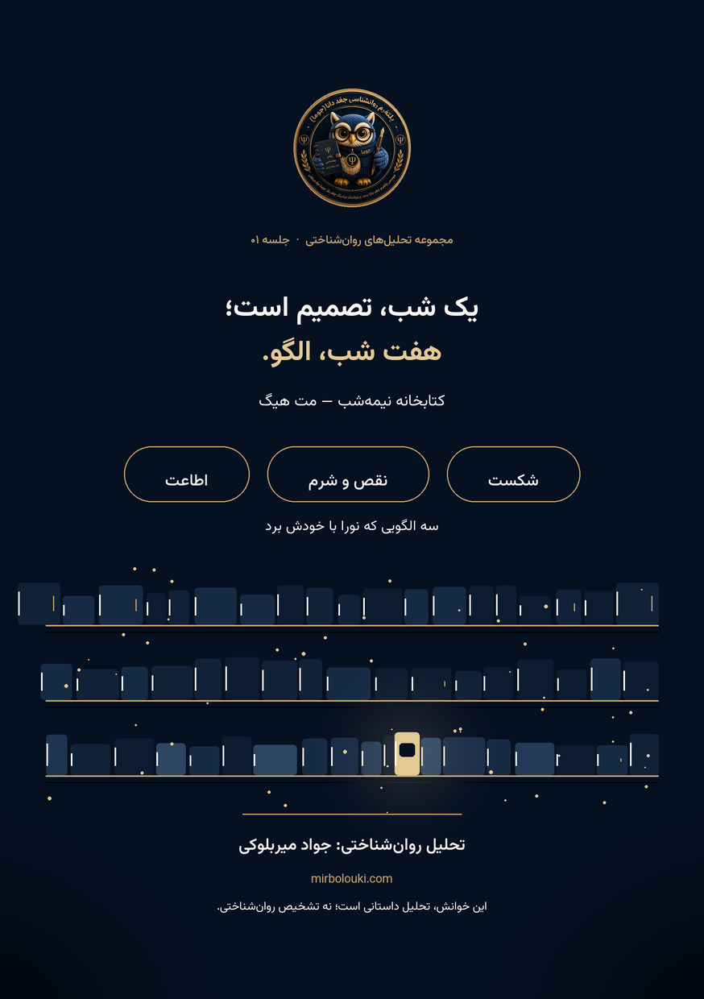
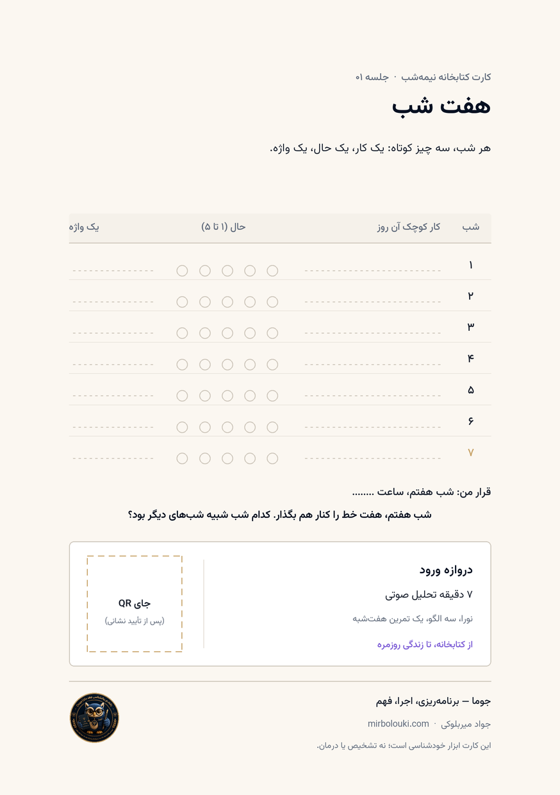
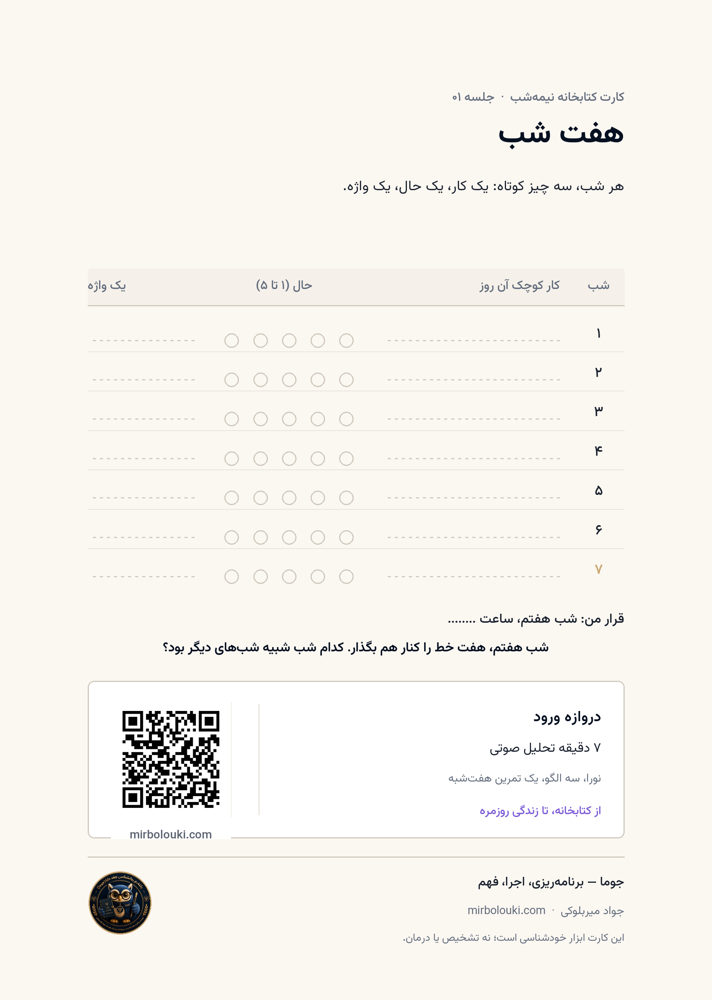
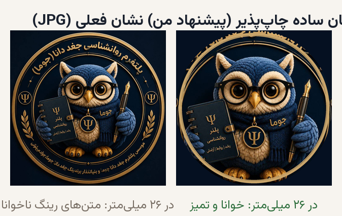

این صفحه، دقیقاً همان چیزی است که تا امروز ساخته شده: «کارت چاپی» و «صفحهٔ دیجیتال». همهٔ جاهای خالی عمدیاند و برچسب دارند.
این را چاپ میکنیم و در ایونت پخش میشود. سمت راست «شب/کتابخانه» است و سمت چپ «هفت شب + جای QR». روی تصویر کلیک کنید تا در اندازهٔ کامل باز شود.


print/side-b-final-300dpi.png

این صفحه پایین، واقعی و قابل لمس است: صدای ۷ دقیقهای را پخش کنید، اسکرول کنید، «هفت شب» را کلیک کنید. همان چیزی است که در سایت شما منتشر میشود.
فایلهای چاپ، واقعی و تستشدهاند. یک نمونهٔ QR آزمایشی روی نسخهٔ B قرار گرفت و با نرمافزار اسکنر، درست خوانده شد (نتیجه: https://mirbolouki.com/?src=test-card).
| وضعیت | مورد |
|---|---|
| ✅ | کارت A5 دوطرفه — PDF / 300dpi / CMYK آماده است |
| ✅ | هوک از متن خودِ شما: «فکر میکنی چه چیزی در نورا باعث میشد در یک چرخهٔ معیوب گیر بیفتد؟» |
| ✅ | پرترهٔ شما در نوار امضا (قطر ۱۹ میلیمتر — کافی برای چاپ) |
| ✅ | سه الگو: شکست · نقص و شرم · اطاعت |
| ✅ | خط تولید QR تست شد: add_qr.py --url "..." → فایل نهایی، سطح خطای Q |
| ⏳ | نشانی نهایی QR (تنها ورودی باقیمانده) |
| ⏳ | نام رسمی ایونت + تاریخ روی کارت |
| ⏳ | تیراژ و نوع چاپ (دیجیتال / افست + فویل طلایی؟) |
| ⚠️ | نشان: از JPG موجود. نسخهٔ «نشان سادهٔ چاپپذیر» هم ساخته شد و برای انتخاب شما آماده است |
هر مورد، برچسب دارد: باید بدون آن نمیتوانم نهایی کنم · فایل فایل لازم است · اختیاری · بعدی.
| مسیر | چیست |
|---|---|
assets/print/print/side-a.pdf | کارت — سمت A، اندازهٔ واقعی A5 با بلید |
assets/print/print/side-b.pdf | کارت — سمت B |
assets/print/print/*-cmyk.tif | فایل CMYK چاپخانه |
assets/print/generate_card.py | کد تولید کارت (متنها و اندازهها قابل تغییر) |
assets/web/www/mobile/index.html | صفحهٔ دیجیتال (صفحهای که همینجا میبینید) |
assets/web/www/media/narration-7min.* | صدای بهینهشدهٔ ۷ دقیقه (Opus 2.3MB + MP3 3.5MB) |
docs/01-pre-design-report.md | گزارش پیش از طراحی: یافتهها با منبع + مشخصات چاپ + استراتژی QR |
docs/02-concept-and-journey.md | کانسپت «کارت کتابخانه + هفت شب» و مسیر کاربر |
docs/narration-transcript-draft.md | پیشنویس ماشینی متن صدا |